1-7막 · 소년 마부와 전차
한국어 번역은 독일어 원문에 대응하는 자동 번역 초안입니다.
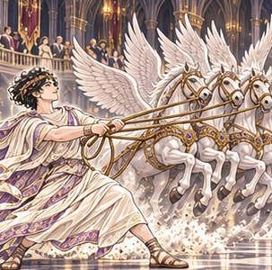
독일어 원문 · 한국어 번역
KNABE WAGENLENKER:
Halt!
Rosse, hemmet eure Flügel,
Fühlet den gewohnten Zügel,
Meistert euch, wie ich euch meistre,소년 전차병: 그만해! 말들이여, 날개를 확인해 보세요. 평소의 고삐를 느껴보세요. 내가 당신을 마스터한 것처럼 당신도 마스터하세요.
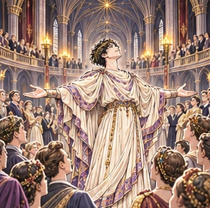
독일어 원문 · 한국어 번역
Rauschet hin, wenn ich begeistre--
Diese Räume laßt uns ehren!
Schaut umher, wie sie sich mehren,
Die Bewundrer, Kreis um Kreise.영감을 받으면 서두르세요. 이 공간을 존중합시다! 그들이 어떻게 번식하는지 둘러보세요. 추종자들은 원을 그리며 원을 그리며 돌고 있습니다.
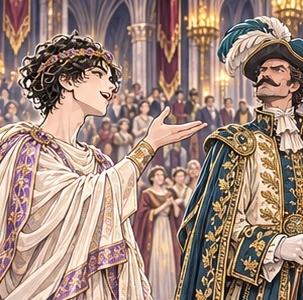
독일어 원문 · 한국어 번역
Herold auf! nach deiner Weise,
Ehe wir von euch entfliehen,
Uns zu schildern, uns zu nennen;
Denn wir sind Allegorien,전령! 당신의 방식대로, 우리가 당신에게서 탈출하기 전에, 우리를 묘사하고 이름을 짓기 위해; 우리는 우화이기 때문에
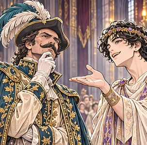
독일어 원문 · 한국어 번역
Und so solltest du uns kennen.
HEROLD:
Wüßte nicht, dich zu benennen;
Eher könnt' ich dich beschreiben.
KNABE LENKER:
So probier's! +그리고 그것이 당신이 우리를 알아야 하는 방법입니다. 헤럴드: 나는 당신의 이름을 어떻게 지어야 할지 모르겠습니다. 나는 당신을 더 잘 설명할 수 있습니다. 소년용 핸들바: 그러니 시도해 보세요! +
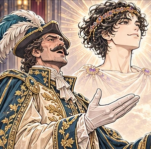
독일어 원문 · 한국어 번역
HEROLD:
Man muß gestehn:
Erstlich bist du jung und schön.
Halbwüchsiger Knabe bist du; doch die Frauen,
Sie möchten dich ganz ausgewachsen schauen.헤럴드: 당신은 인정해야합니다 : 우선 젊고 아름답습니다. 당신은 사춘기 소년입니다. 하지만 여자들 그들은 당신이 완전히 성장하는 것을 보고 싶어합니다.
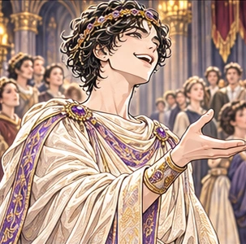
독일어 원문 · 한국어 번역
Du scheinest mir ein künftiger Sponsierer,
Recht so von Haus aus ein Verführer.
KNABE LENKER:
Das läßt sich hören! fahre fort,
Erfinde dir des Rätsels heitres Wort.당신은 미래의 스폰서인 것 같아요. 본질적으로 꽤 유혹자입니다. 소년용 핸들바: 당신은 그것을들을 수 있습니다! 계속하다, 수수께끼에 대한 재미있는 단어를 만들어보세요.
독일어 원문 · 한국어 번역
HEROLD:
Der Augen schwarzer Blitz, die Nacht der Locken,
Erheitert von juwelnem Band!
Und welch ein zierliches Gewand
Fließt dir von Schultern zu den Socken,헤럴드: 눈의 검은 번개, 컬의 밤, 보석 리본으로 응원합니다! 그리고 정말 섬세한 가운이에요 어깨부터 양말까지 흘러내리는,
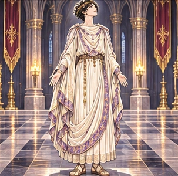
독일어 원문 · 한국어 번역
Mit Purpursaum und Glitzertand!
Man könnte dich ein Mädchen schelten;
Doch würdest du, zu Wohl und Weh,
Auch jetzo schon bei Mädchen gelten,보라색 테두리와 글리터 트림으로! 당신은 여자라고 불릴 수 있습니다. 하지만 당신은 좋든 나쁘든, 지금도 소녀들에게 적용되지만,
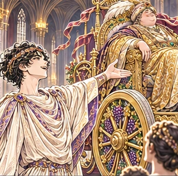
독일어 원문 · 한국어 번역
Sie lehrten dich das ABC.
KNABE LENKER:
Und dieser, der als Prachtgebilde
Hier auf dem Wagenthrone prangt?
HEROLD:
Er scheint ein König reich und milde,그들은 당신에게 ABC를 가르쳤습니다. 소년용 핸들바: 그리고 이것은 웅장한 구조로 여기 전차 왕좌에 새겨져 있나요? 헤럴드: 그는 부자이고 온화한 왕인 것 같습니다.
독일어 원문 · 한국어 번역
Wohl dem, der seine Gunst erlangt!
Er hat nichts weiter zu erstreben,
Wo's irgend fehlte, späht sein Blick,
Und seine reine Lust zu geben그의 은혜를 받는 자는 복이 있도다! 그는 더 이상 노력할 것이 없습니다. 빠진 곳마다 그의 눈이 엿보이고, 그리고 그의 순수한 욕망을 제공하기 위해
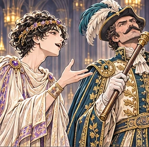
독일어 원문 · 한국어 번역
Ist größer als Besitz und Glück.
KNABE LENKER:
Hiebei darfst du nicht stehen bleiben,
Du mußt ihn recht genau beschreiben.
HEROLD:
Das Würdige beschreibt sich nicht.소유와 행복보다 더 위대합니다. 소년용 핸들바: 가만히 있으면 안 되고, 아주 정확하게 설명해야 합니다. 헤럴드: 가치있는 것은 설명할 수 없습니다.
독일어 원문 · 한국어 번역
Doch das gesunde Mondgesicht,
Ein voller Mund, erblühte Wangen,
Die unterm Schmuck des Turbans prangen;
Im Faltenkleid ein reich Behagen!하지만 건강한 달의 얼굴, 가득 찬 입, 피어난 뺨, 터번의 장식 아래에서 빛나는 자들, 주름 드레스로 편안함을 느껴보세요!
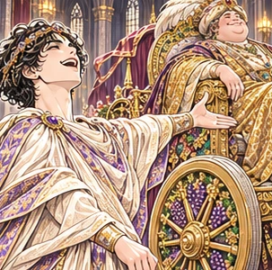
독일어 원문 · 한국어 번역
Was soll ich von dem Anstand sagen?
Als Herrscher scheint er mir bekannt.
KNABE LENKER:
Plutus, des Reichtums Gott genannt!
Derselbe kommt in Prunk daher,품위에 대해 무엇을 말할 수 있습니까? 그는 통치자로서 나에게 친숙한 것 같습니다. 소년용 핸들바: 부의 신이라 불리는 플루토스! 똑같은 것이 화려하게 다가오고,
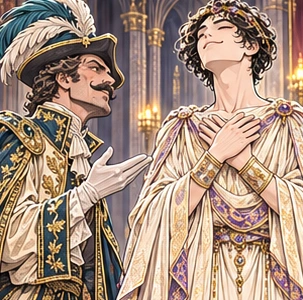
독일어 원문 · 한국어 번역
Der hohe Kaiser wünscht ihn sehr.
HEROLD:
Sag von dir selber auch das Was und Wie!
KNABE LENKER:
Bin die Verschwendung, bin die Poesie;
Bin der Poet, der sich vollendet,대황께서는 그를 매우 원하십니다. 헤럴드: 또한 자신에 대해 무엇을, 어떻게 말하십시오! 소년용 핸들바: 그것은 쓰레기이고 시이다. 자기 자신을 완성하는 시인인가,
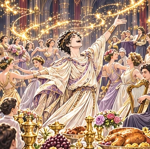
독일어 원문 · 한국어 번역
Wenn er sein eigenst Gut verschwendet.
Auch ich bin unermeßlich reich
Und schätze mich dem Plutus gleich,
Beleb' und schmück' ihm Tanz und Schmaus,그가 자신의 이익을 낭비할 때. 나도 엄청난 부자다 그리고 나 자신을 Plutus와 동등하다고 생각하십시오. 그의 춤과 잔치를 활기차게 장식하고,
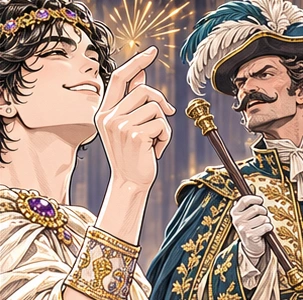
독일어 원문 · 한국어 번역
Das, was ihm fehlt, das teil' ich aus.
HEROLD:
Das Prahlen steht dir gar zu schön,
Doch laß uns deine Künste sehn.
KNABE LENKER:
Hier seht mich nur ein Schnippchen schlagen,그 사람에게 부족한 부분은 제가 드릴게요. 헤럴드: 자랑하는 것은 당신에게 너무 좋은 것입니다. 하지만 당신의 예술을 보자. 소년용 핸들바: 여기 내가 장난치는 모습이 보이네
독일어 원문 · 한국어 번역
Schon glänzt's und glitzert's um den Wagen.
Da springt eine Perlenschnur hervor!
Nehmt goldne Spange für Hals und Ohr;
Auch Kamm und Krönchen ohne Fehl,이미 차 주변에는 빛나고 반짝거리고 있어요. 진주 한줄이 튀어나오네요! 네 목과 귀에 금 걸쇠를 가져가라. 빗과 면류관에도 흠이 없고
독일어 원문 · 한국어 번역
In Ringen köstlichstes Juwel;
Auch Flämmchen spend' ich dann und wann,
Erwartend, wo es zünden kann.
HEROLD:
Wie greift und hascht die liebe Menge!반지의 가장 귀중한 보석; 가끔 불도 좀 붙여주고, 어디에서 발화될 수 있는지 기다리고 있습니다. 헤럴드: 얼마나 사랑하는 군중이 붙잡고 빼앗는지!
독일어 원문 · 한국어 번역
Fast kommt der Geber ins Gedränge.
Kleinode schnippt er wie ein Traum,
Und alles hascht im weiten Raum.
Doch da erleb' ich neue Pfiffe:주는 사람은 거의 군중 속으로 들어갑니다. 그는 꿈처럼 보석을 휘두르며, 그리고 모든 것이 넓은 공간으로 돌진합니다. 그러나 나는 새로운 휘파람 소리를 경험합니다.
독일어 원문 · 한국어 번역
Was einer noch so emsig griffe,
Des hat er wirklich schlechten Lohn,
Die Gabe flattert ihm davon.
Es löst sich auf das Perlenband,누군가가 아무리 부지런히 파악해도 그 사람 급여가 정말 안 좋거든요. 선물은 그에게서 펄럭입니다. 진주목걸이에 걸려 느슨해지며,
독일어 원문 · 한국어 번역
Ihm krabbeln Käfer in der Hand,
Er wirft sie weg, der arme Tropf,
Und sie umsummen ihm den Kopf.
Die andern statt solider Dinge딱정벌레가 그의 손에서 기어 다니고 있습니다. 버린 놈이네 불쌍한 놈 그리고 그들은 그의 머리 주위에서 윙윙거립니다. 단단한 것 대신 다른 것
독일어 원문 · 한국어 번역
Erhaschen frevle Schmetterlinge.
Wie doch der Schelm so viel verheißt
Und nur verleiht, was golden gleißt!
KNABE LENKER:
Zwar Masken, merk' ich, weißt du zu verkünden,사악한 나비를 잡아보세요. 도적은 어떻게 그렇게 많은 것을 약속하는가 그리고 황금빛으로 빛나는 것만을 줍니다! 소년용 핸들바: 비록 가면을 쓰고 있지만 당신은 선포하는 방법을 알고 있습니다.
독일어 원문 · 한국어 번역
Allein der Schale Wesen zu ergründen,
Sind Herolds Hofgeschäfte nicht;
Das fordert schärferes Gesicht.
Doch hüt' ich mich vor jeder Fehde;단지 껍질 존재들을 이해하기 위해서, 헤럴드의 법정 업무가 아닌가? 이것은 더 날카로운 얼굴을 요구합니다. 그러나 나는 모든 불화를 경계합니다.
독일어 원문 · 한국어 번역
An dich, Gebieter, wend' ich Frag' und Rede.
Hast du mir nicht die Windesbraut
Des Viergespannes anvertraut?
Lenk' ich nicht glücklich, wie du leitest?주님, 제가 당신께 묻고 말씀드립니다. 나를 위한 바람의 신부가 없나요? 4마 팀에 맡겨졌나요? 당신이 이끄는 것처럼 나도 행복하게 이끌지 않나요?
독일어 원문 · 한국어 번역
Bin ich nicht da, wohin du deutest?
Und wußt' ich nicht auf kühnen Schwingen
Für dich die Palme zu erringen?
Wie oft ich auch für dich gefochten,나는 당신이 가리키는 곳이 아닌가요? 그리고 나는 대담한 날개를 가지고 있지 않다는 것을 알았습니다 당신을 위해 야자수를 얻으려면? 너를 위해 몇 번이나 싸워도
독일어 원문 · 한국어 번역
Mir ist es jederzeit geglückt:
Wenn Lorbeer deine Stirne schmückt,
Hab' ich ihn nicht mit Sinn und Hand geflochten?
PLUTUS:
Wenn's nötig ist, daß ich dir Zeugnis leiste,나는 항상 성공했습니다. 월계수로 네 이마를 장식할 때, 센스와 손으로 땋아주지 않았나? 플루투스: 만일 내가 너희에게 증거할 필요가 있거든
독일어 원문 · 한국어 번역
So sag' ich gern: Bist Geist von meinem Geiste.
Du handelst stets nach meinem Sinn,
Bist reicher, als ich selber bin.
Ich schätze, deinen Dienst zu lohnen,그래서 나는 이렇게 말하고 싶습니다. 당신은 내 영의 영입니다. 넌 항상 내 의도대로 행동하고, 당신은 나보다 더 부자입니다. 귀하의 서비스에 대한 보상에 감사드립니다.
독일어 원문 · 한국어 번역
Den grünen Zweig vor allen meinen Kronen.
Ein wahres Wort verkünd' ich allen:
Mein lieber Sohn, an dir hab' ich Gefallen.
KNABE LENKER:
Die größten Gaben meiner Hand,내 모든 왕관 앞의 녹색 가지. 나는 모든 사람에게 참된 말씀을 선포합니다. 사랑하는 아들아, 나는 너를 좋아한다. 소년용 핸들바: 내 손의 가장 큰 선물,
독일어 원문 · 한국어 번역
Seht! hab' ich rings umher gesandt.
Auf dem und jenem Kopfe glüht
Ein Flämmchen, das ich angesprüht;
Von einem zu dem andern hüpft's,보세요! 여기저기 보냈어요. 이러저러한 머리에 빛이 나네 내가 뿌린 작은 불꽃; 그것은 하나에서 다른 것으로 점프합니다.
독일어 원문 · 한국어 번역
An diesem hält sich's, dem entschlüpft's,
Gar selten aber flammt's empor,
Und leuchtet rasch in kurzem Flor;
Doch vielen, eh' man's noch erkannt,이것에 달라붙고, 이것에서 벗어나고, 하지만 불이 붙는 경우는 거의 없고, 그리고 짧은 더미 속에서 빠르게 빛난다. 하지만 많은 사람들이 깨닫기도 전에
독일어 원문 · 한국어 번역
Verlischt es, traurig ausgebrannt.
WEIBERGEKLATSCH:
Da droben auf dem Viergespann
Das ist gewiß ein Scharlatan;
Gekauzt da hintendrauf Hanswurst,그것은 나가고, 슬프게도 타버렸습니다. 여성의 가십: 저기 네 마리 말 팀에 있어 이것은 확실히 사기꾼입니다. 저기서 Hanswurst를 씹어먹었는데,
독일어 원문 · 한국어 번역
Doch abgezehrt von Hunger und Durst,
Wie man ihn niemals noch erblickt;
Er fühlt wohl nicht, wenn man ihn zwickt.
DER ABGEMAGERTE:
Vom Leibe mir, ekles Weibsgeschlecht!그러나 배고픔과 목마름으로 인해 쇠약해지고, 어떻게 그 사람을 다시는 볼 수 없을까요? 당신이 그를 꼬집어도 그는 아마 느끼지 못할 것입니다. 수척한 남자: 내 몸에서 나온 역겨운 여자!
독일어 원문 · 한국어 번역
Ich weiß, dir komm' ich niemals recht.--
Wie noch die Frau den Herd versah,
Da hieß ich Avaritia;
Da stand es gut um unser Haus:나는 결코 당신을 기쁘게 할 수 없다는 것을 압니다.-- 그 여자가 여전히 난로를 어떻게 돌보고 있었는지, 그때 내 이름은 Avaritia였습니다. 우리 집 상황은 순조롭게 진행되고 있었습니다.
독일어 원문 · 한국어 번역
Nur viel herein und nichts hinaus!
Ich eiferte für Kist' und Schrein;
Das sollte wohl gar ein Laster sein.
Doch als in allerneusten Jahren많이 들어오고 나가는 것은 없습니다! 나는 가슴과 성소에 열심이었습니다. 그것은 아마도 악덕일 것입니다. 하지만 최근 몇년보다
독일어 원문 · 한국어 번역
Das Weib nicht mehr gewohnt zu sparen,
Und, wie ein jeder böser Zahler,
Weit mehr Begierden hat als Taler,
Da bleibt dem Manne viel zu dulden,그 여자는 더 이상 저축에 익숙하지 않습니다. 그리고 모든 나쁜 지불자와 마찬가지로, 탈러보다 훨씬 더 많은 욕망을 가지고 있으며, 남자는 참아야 할 일이 많고,
독일어 원문 · 한국어 번역
Wo er nur hinsieht, da sind Schulden.
Sie wendet's, kann sie was erspulen,
An ihren Leib, an ihren Buhlen;
Auch speist sie besser, trinkt noch mehr그가 보는 곳마다 빚이 널려 있다. 그녀는 그것을 돌리고, 뭔가를 돌릴 수 있습니까? 그녀의 몸에게, 그녀의 연인에게; 그녀는 또한 더 잘 먹고 더 많이 마신다
독일어 원문 · 한국어 번역
Mit der Sponsierer leidigem Heer;
Das steigert mir des Goldes Reiz:
Bin männlichen Geschlechts, der Geiz!
HAUPTWEIB:
Mit Drachen mag der Drache geizen;후원자의 지친 군대와 함께; 이것은 나에게 금의 매력을 증가시킵니다. 나는 남자다, 욕심쟁이! 주요 여성: 용은 용에게 인색할 수 있습니다.
독일어 원문 · 한국어 번역
Ist's doch am Ende Lug und Trug!
Er kommt, die Männer aufzureizen,
Sie sind schon unbequem genug.
WEIBER IN MASSE:
Der Strohmann! Reich ihm eine Schlappe!결국 그것은 모두 거짓말이고 기만이다! 그는 남자들을 화나게 하려고 다가온다. 그들은 이미 충분히 불편합니다. 여성 미사: 밀짚맨! 그를 때려주세요!
독일어 원문 · 한국어 번역
Was will das Marterholz uns dräun?
Wir sollen seine Fratze scheun!
Die Drachen sind von Holz und Pappe,
Frisch an und dringt auf ihn hinein!
고문나무는 우리에게 무엇을 하려는 걸까요? 우리는 그의 얼굴을 피해야 해요! 연은 나무와 판지로 만들어져 있습니다. 새롭게 시작해서 그에게 침투하세요!